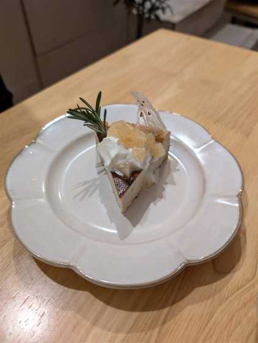
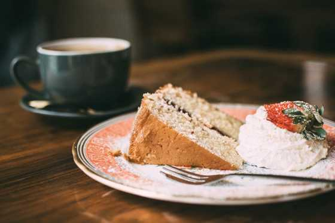
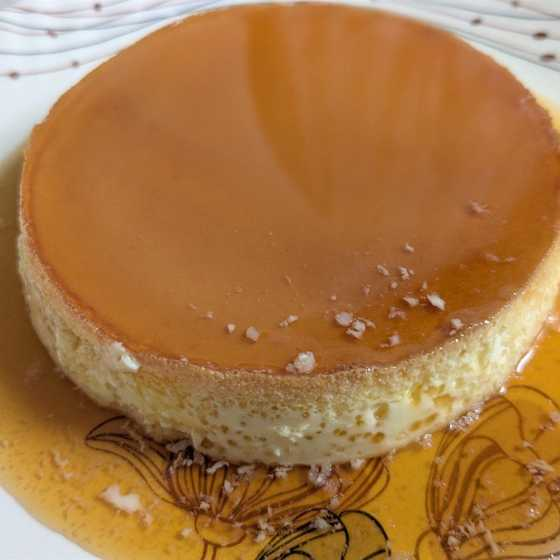
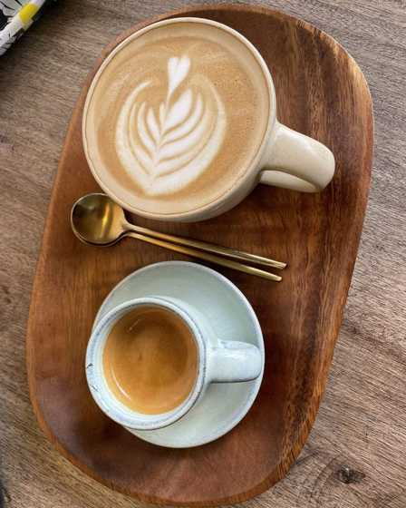
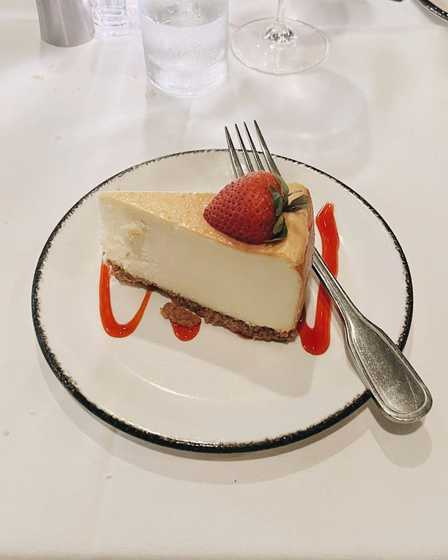
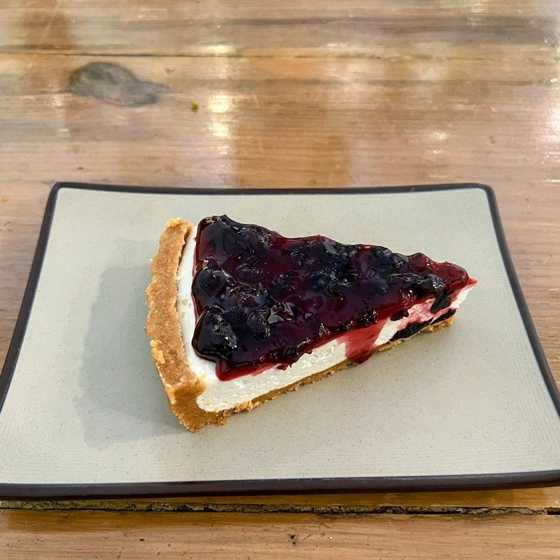
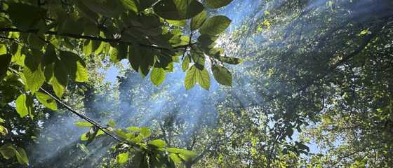

ふんわりカフェ
ふんわり焼きあがる、ちいさなシフォンケーキのひととき。
新潟県上越市昭和町にある、ちいさなシフォンケーキ専門店です。やわらかな色とまるい形で、ふんわりした空気をイメージしてページをつくりました。

メニュー
Instagramでは、シフォンケーキを中心に、ギフト向けの商品(のしかけの案内あり)も紹介されています。メニューの内容・価格は準備中です。





※写真はすべてイメージです。実際の商品とは異なります。
口コミ(イメージ例)
イメージ例
ふんわりした食感に、思わず笑顔になりました。ちいさなお店であたたかい雰囲気でした。
イメージ例
手みやげに選びました。見た目もやさしくて、渡した相手にも喜んでもらえそうです。
イメージ例
午後のひと休みにぴったり。コーヒーに合う軽さで、また行きたくなります。
※口コミは制作側が作成したイメージ例であり、実在のお客様の声ではありません。
お店について
Instagramのプロフィールでは、「ちいさなシフォンケーキ専門店」と紹介されています。住宅会社「タカハシ工務店」に併設されたお店です。
お店の由来や店名の意味は確認できていないため、ここでは触れていません。ページの色や形は、店名から受ける印象をもとにした制作側のイメージです。





アクセス・お店の情報
- 店名
- ふんわりカフェ
- 住所
- 〒943-0891 新潟県上越市昭和町2丁目18-25
- 電話
- 準備中
- 営業時間
- 準備中(Instagramには10:00〜16:00、L.O.15:30との記載があります。ご来店前にご確認ください)
- 定休日
- 準備中
- 料金
- 準備中
- @funwari_cafe_joetsu